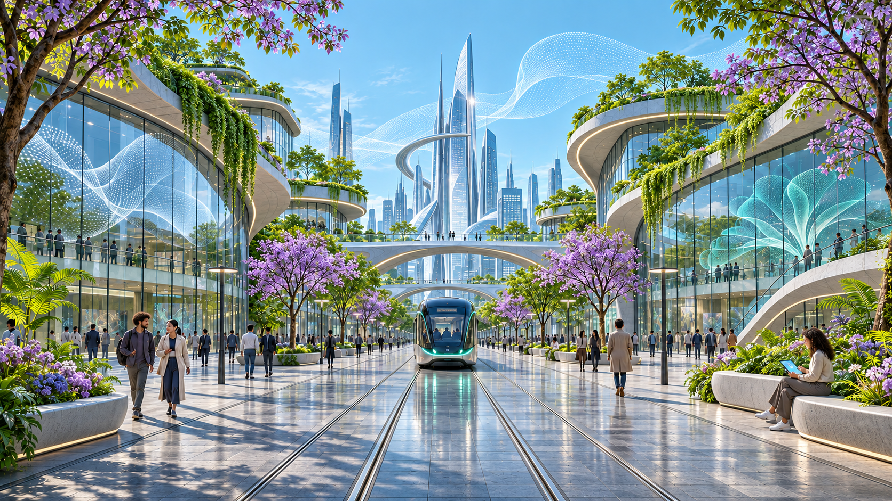
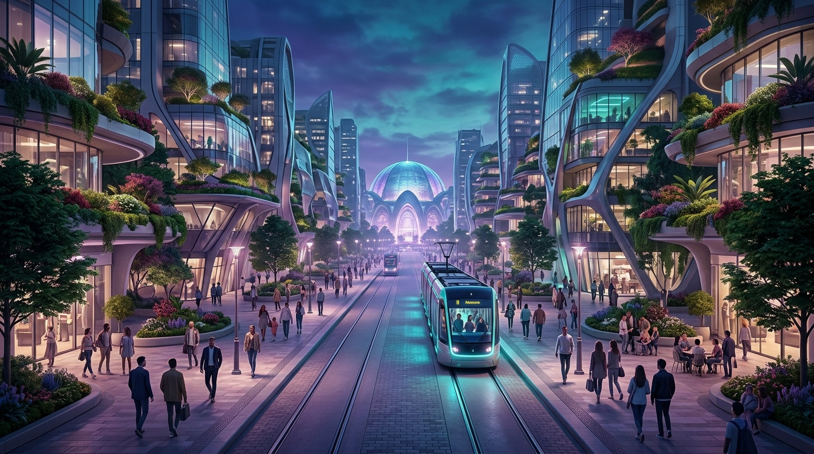

01 / РЕЗУЛЬТАТ ПОЛУЧЕН
ChatGPT Images
Симметрия и настроение соответствуют запросу. На трамвае встречается неразборчивый мелкий текст.
03 / ЛАБОРАТОРИЯ
Реальные результаты генерации и редактирования изображений. Двигайте ползунок, читайте запросы и сравнивайте ограничения.
ЭКСПЕРИМЕНТ 01 / IMAGE EDITING
Слева день, справа ночь. Перемещайте ползунок мышью, касанием или стрелками клавиатуры.


Передвиньте границу для сравнения
Модель: ChatGPT Images. Два независимых редактирования одного исходного кадра. Точная версия модели не показана инструментом. Дата: 05.11.2026.
Наблюдение: башни, мосты, рельсы и положение трамвая близки; мелкие детали, фигуры людей и отдельные элементы фасадов не совпадают идеально.
Create a refined cinematic concept art image for a modern digital museum exhibition about generative AI. A visionary future city boulevard at blue hour, symmetrical street-level perspective, lush planted terraces integrated in architecture, a sleek tram in the center, human-scale pedestrians, atmospheric violet and teal light, careful coherent architectural geometry, no lettering, no logo, no text. Wide 16:9 composition, editorial art direction, highly detailed but tasteful, premium science museum feel. This is an original generated visual exhibit.
Edit the supplied image as an architectural continuity study. Produce a photorealistic clear DAY version of precisely the same future-city boulevard. Preserve the exact framing and perspective, every major building outline, the left and right curved rooflines, central slender towers and two bridges, tree positions, sidewalk and rail lines, and the tram's position and silhouette. Change ONLY lighting and atmosphere: crisp late morning sun, pale cyan sky, believable daylight reflections, natural green foliage, illuminated by sunlight rather than magenta lights. No new buildings, vehicles, signs or camera shift. No added text. High resolution wide composition.
Edit the supplied image as an architectural continuity study. Produce a photorealistic NIGHT version of precisely the same future-city boulevard. Preserve the exact framing and perspective, every major building outline, left and right curved rooflines, central slender towers and two bridges, tree positions, sidewalk and rail lines, and the tram's position and silhouette. Change ONLY lighting and atmosphere: deep cobalt night sky, realistic warm windows, restrained violet and cyan architectural lighting and wet pavement reflections. Keep people and tram in the same locations. No new buildings, vehicles, signs or camera shift. No added text. High resolution wide composition.
ЭКСПЕРИМЕНТ 02 / TEXT TO IMAGE
Две независимые генерации ChatGPT Images на одну тему. У них нет общего исходного кадра.

A futuristic city street with a tram.
Create a refined cinematic concept art image for a modern digital museum exhibition about generative AI. A visionary future city boulevard at blue hour, symmetrical street-level perspective, lush planted terraces integrated in architecture, a sleek tram in the center, human-scale pedestrians, atmospheric violet and teal light, careful coherent architectural geometry, no lettering, no logo, no text. Wide 16:9 composition, editorial art direction, highly detailed but tasteful, premium science museum feel. This is an original generated visual exhibit.
Короткая фраза оставила модели свободу: трамвай занял большую часть кадра, добавились вывески. Подробный запрос задал симметрию, центральное расположение трамвая, свет и палитру. Это один опыт, а не доказательство, что длинный запрос всегда даёт лучший результат.
ЭКСПЕРИМЕНТ 03 / СРАВНЕНИЕ
Две независимые генерации по одному и тому же запросу без референса. Это результаты конкретных попыток, а не общий рейтинг моделей.
Симметрия и настроение соответствуют запросу. На трамвае встречается неразборчивый мелкий текст.

Трамвай смещён вправо, пешеходов больше, силуэт купола задаёт дальний план. На табло трамвая есть нечитаемый текст. Бесплатный режим Gemini; интерфейс не показал точный идентификатор модели.
Соответствие запросу, композиция, архитектура, положение трамвая, мелкие детали и текст. Одинаковый текст запроса приведён выше; в Gemini отдельно выбран формат 16:9. Оба результата получены с одной попытки.
ЛАБОРАТОРНАЯ №11 / СОБЫТИЯ
Первый абзац: при наведении меняется цвет текста.
Второй абзац: при наведении меняется фон.
Третий абзац: фон появляется только во время наведения.